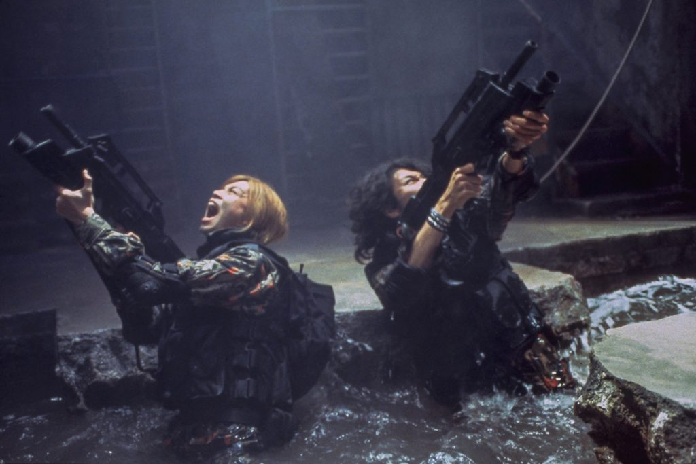
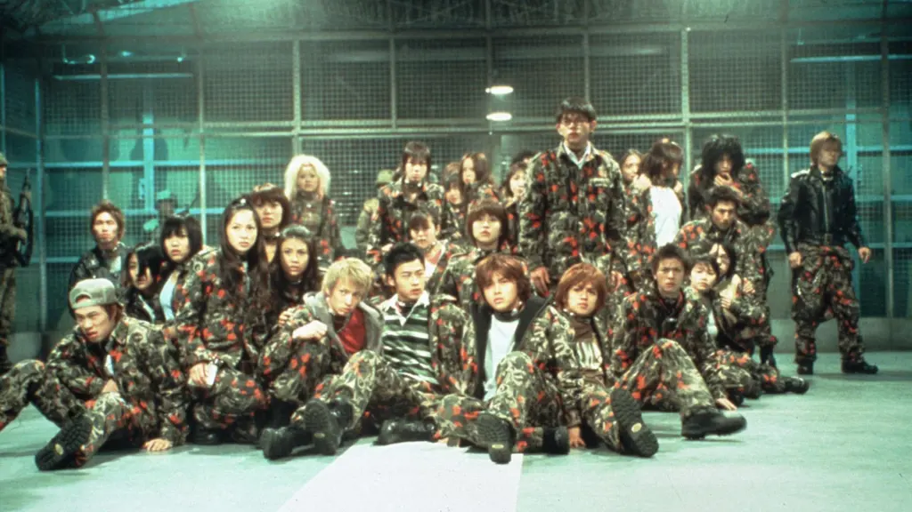

Por que o Jun Nanami é, sem dúvidas, o melhor personagem de Battle Royale 2
Por: Maria Luiza
seja bem-vindo ao meu blog. Essa é minha primeira postagem.
Por: Maria Luiza
seja bem-vindo ao meu blog. Essa é minha primeira postagem.

Por: O papel do luto como combustível para a liderança e resistência.
O contraste entre a inocência da vida escolar e o trauma do jogo..

Destino no filme: Durante o conflito armado e as emboscadas na ilha contra os rebeldes liderados por Shuya Nanahara, Jun Nanami acaba sendo uma das vítimas dos confrontos mortais do jogo
Por: Maria Luiza
Jun Nanami (名波 順, interpretado pelo ator Munetaka Aoki) é o aluno número 10 da turma do programa BRII. Perfil: Jun é um jovem de 15 anos que fazia parte da gangue Schwartz Katze antes de ser levado pelo programa do governo. Motivação: Ele guarda profundo ressentimento pelo grupo rebelde porque seu irmão mais velho, a quem ele admirava muito, acabou morrendo nos ataques promovidos pelos rebeldes.
